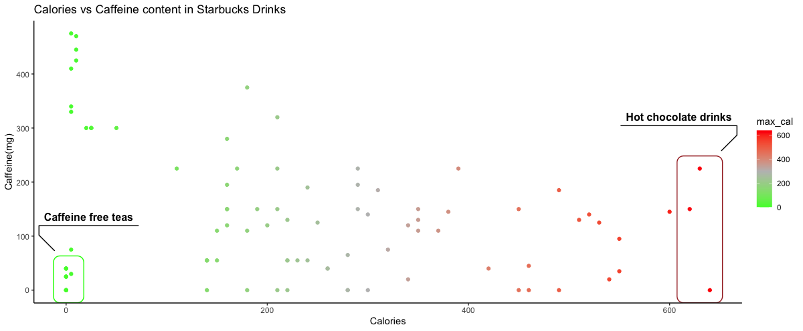

ggplot and plotly packages that compares the calories vs caffeine content of Starbucks drinks. It’s not functioning to add to this blog post, so I’ll keep trying to figure that out.
#TidyTuesday 2021, Week 52
library(tidytuesdayR)
library(dplyr)
library(ggplot2)
library(plotly)
library(htmlwidgets)
#read in data
tuesdata <- tidytuesdayR::tt_load('2021-12-21')
#load data to starbucks variable
starbucks <- tuesdata$starbucks
#group by product name and create a max_cal to calories:
starbucks <- starbucks %>%
group_by(product_name) %>%
mutate(max_serv_size = max(serv_size_m_l), max_cal = max(calories))
#create dateframe with simplified starbucks data.
plot_df <- starbucks %>%
filter(serv_size_m_l == max_serv_size & calories == max_cal) %>%
group_by(product_name) %>%
slice(1) %>%
filter(size != "1 scoop")
#create plot for caffeine vs calories
a = ggplot(plot_df, aes(x=max_cal, y=caffeine_mg))+
geom_point(aes(color = max_cal))+
scale_color_gradient2(low="green", mid = "grey", high = "red", midpoint = 300)+
labs(x= "Calories", y= "Caffeine(mg)", title= "Calories vs Caffeine content in Starbucks Drinks")+
geom_mark_rect(aes(filter = max_cal > 600, label = "Hot chocolate drinks"), alpha=0, show.legend = F, color = "brown") +
geom_mark_rect(aes(filter = caffeine_mg < 45 & max_cal < 10, label = "Caffeine free teas"), alpha=0, show.legend = F, color = "green")+
theme_classic()
#create interactive plot
interactive = ggplotly(a)
#save as html to view widget
saveWidget(as_widget(a), "plotly.html",selfcontained = F )